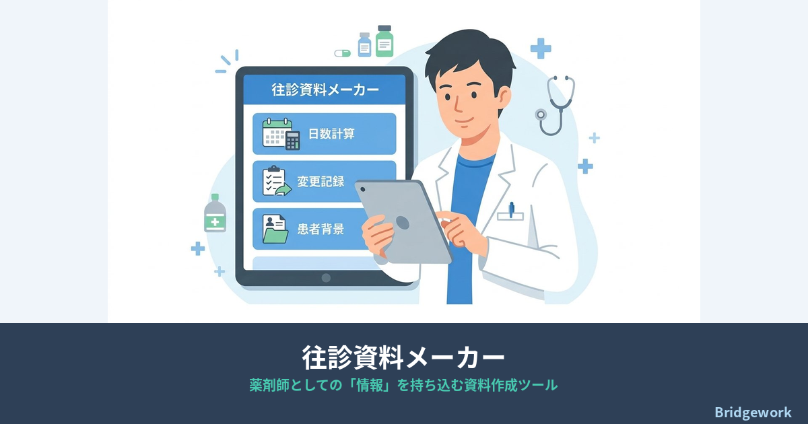
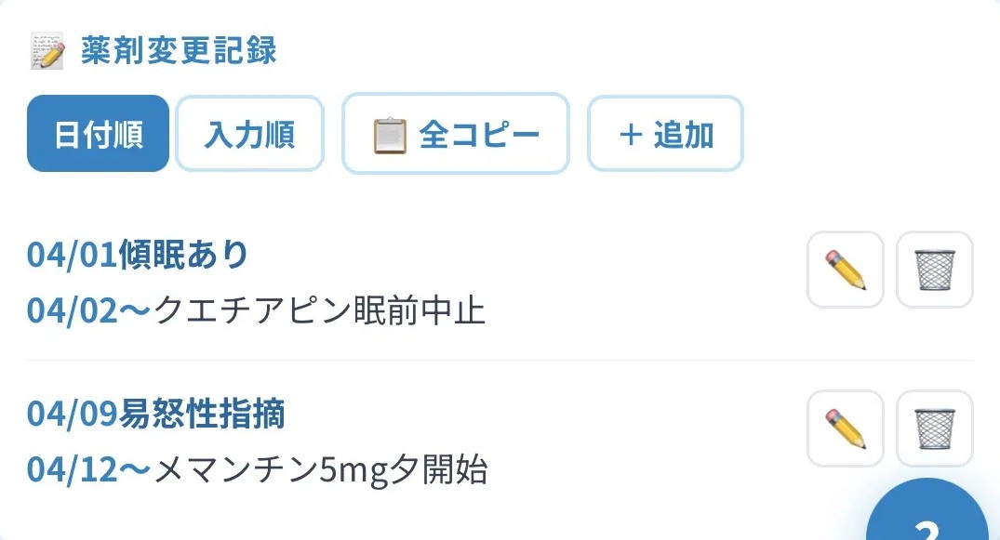
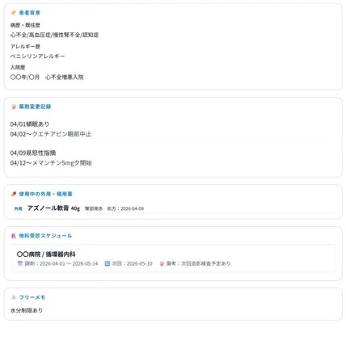

薬歴PCを往診に持参できない方のスマホ・タブレット完結ツール。
往診日を入力するだけで処方期間を自動計算。
変更記録・外用薬・他科受診をチームごとに一元管理し、印刷して往診当日に持参できます。
「実際に施設の往診同行をこなす現場薬剤師10人の声から作り上げた、往診同行資料の完成形。」
※ イニシャル管理でシンプル運用。患者の個人情報は不要です。

2026年診療報酬改定で、往診同行薬剤師・在宅薬剤師の役割が正式に評価されるようになりました。医師と薬剤師による同時訪問を評価する『訪問薬剤管理医師同時指導料』が新設され、往診同行への薬剤師参加がこれまで以上に求められています。往診資料メーカーは、この診療報酬改定 往診の現場変化に対応した施設薬剤師ツールです。
往診に薬歴PCを持参できない・スマホで完結させたい薬剤師の方へ。
往診同行する施設薬剤師・在宅薬剤師が実際に使う機能だけを厳選しました。
往診日・処方日数・処方ズレ日数を入力するだけ。処方開始日・終了日・次回往診日を自動計算。チームごとにデフォルト値を保存できます。
変更指示日・理由・開始日・内容を記録。患者ごとに時系列で整理され、施設一括印刷にも対応。追加薬の日数計算ツールも搭載。
薬剤名・処方量・残数を記録。使わなくなった薬はアーカイブして保存。処方終了後も履歴として残せます。
受診先・診療科・調剤期間・服用タイミングを記録。受診終了後はアーカイブで履歴管理。
患者ごとの全情報を全体印刷。直近1ヶ月分の変更記録のみ印刷。施設単位での一括印刷にも対応。テキストコピーも1タップ。
患者名はイニシャルや部屋番号で管理。施設名も任意表記でOK。Googleアカウント以外の個人情報の入力は不要です。
施設往診だけでなく個人在宅の訪問診療同行にも対応。患者番号や①②などの表記でシンプルに管理できます。
アプリの画面イメージ


面倒な登録手続きは一切不要。Googleアカウントがあれば今すぐ使えます。
アプリを開いてGoogleアカウントでログインするだけ。メール登録・パスワード設定は不要です。
担当施設と往診チームを登録。処方日数・処方ズレ日数のデフォルト値もここで設定します。
往診日を入力するだけで処方期間が自動計算。変更指示を受けたらそのまま記録できます。
✓ 完全無料・課金なし ✓ Googleアカウントのみ ✓ イニシャル管理OK
Excelの往診資料を卒業して、処方計算・変更記録・薬管理をアプリで一元管理しましょう。
無料で使ってみる →✓ 完全無料・課金なし ✓ Googleログインのみ ✓ 今日から即使える
イニシャル管理でシンプル運用。患者の個人情報の入力は不要です。